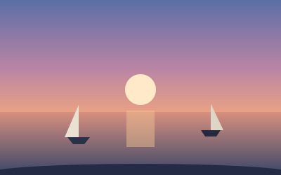
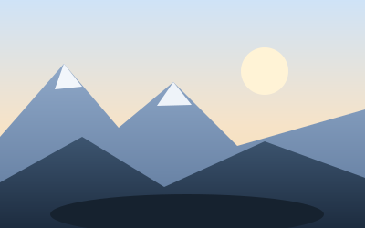
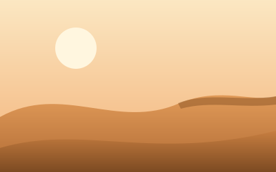

Image effects
Pure-CSS image treatments from the utilities layer — token-driven, zero
JS, and safe by default: engines without a feature show the plain image,
and every motion effect gates off under
prefers-reduced-motion. The artwork on this page is inline
SVG, so filters map its full tonal range like a photograph.
.dim — dark-mode dimming
Photos glare on dark surfaces. .dim applies
--wel-img-dim: the identity filter in light scheme, a gentle
brightness/contrast pull-down in dark — and it follows
data-theme pins exactly like the colour palette. The panel
below is pinned dark, so the difference shows in either OS scheme.

.dim — dimmed on this dark-pinned panel<img class="dim" src="harbour.jpg" alt="…">
/* the dark amount is one themable token */
:root { --wel-img-dim-amount: brightness(0.8) contrast(1.1); }.duotone — token-driven two-tone
A wrapper class: the media is desaturated, then two blend overlays map
blacks to --wel-duotone-shadow and whites to
--wel-duotone-highlight. Both endpoints derive from the
cascaded --wel-color-accent, so one accent override retints
the whole effect. Under forced colors the overlays drop and the original
image shows.

--wel-color-accent override<figure class="duotone">
<img src="valley.jpg" alt="…">
</figure>
/* retint: one accent override moves both endpoints */
.duotone.brand-alt { --wel-color-accent: var(--wel-green-600); }.edge-fade — gradient mask bleeds
A gradient mask-image melts the element into whatever is
behind it. The default fades all four edges; data-edges
narrows it to an axis, one edge, or a radial vignette. Fade depth is
--wel-edge-fade. Engines without mask support simply show the
unfaded image.

data-edges="block-end" — hero bleeddata-edges="radial" — vignette<img class="edge-fade" data-edges="block-end" src="dunes.jpg" alt="…"
style="--wel-edge-fade: 6rem">
<!-- data-edges: block | inline | block-start | block-end |
inline-start | inline-end | radial (omit = all four) -->.reveal — scroll-driven entry
Fade/scale-in driven by the element's own viewport entry
(animation-timeline: view()) — no observers, no JS. The
hidden start state only exists where the feature (and motion) is allowed,
so Firefox and reduced-motion readers always see the images. Scroll these
into view:
--wel-reveal-distance rise--wel-reveal-scale<img class="reveal" src="peak.jpg" alt="…">
/* knobs: start scale and block-axis rise */
.reveal.hero { --wel-reveal-scale: 0.9; --wel-reveal-distance: 1rem; }data-vt-image — view-transition morph
From the opt-in view-transitions module: tag a
--wel-vt-named image with data-vt-image and its
snapshots cover-fit the morphing box and swap without the cross-fade
double-exposure. It works for cross-document morphs (see the
Waypoint showcase) and equally for your
own same-document transitions — pick a thumbnail below; the few lines of
gallery wiring are this page's only script. Without view-transition
support (or with reduced motion) the stage simply swaps instantly.
<img data-vt-image src="thumb.jpg" alt="…"> <!-- both sides tagged -->
/* name the pair only while the swap is in flight (tabs pattern) */
thumb.style.setProperty('--wel-vt', 'stage');
const vt = document.startViewTransition(() => {
thumb.style.removeProperty('--wel-vt');
stage.style.setProperty('--wel-vt', 'stage');
stage.src = thumb.src;
});
vt.finished.finally(() => stage.style.removeProperty('--wel-vt'));.frosted-caption — glass caption bar
The family's sanctioned text-on-imagery pattern: the
figcaption pins to the media's bottom edge as a translucent
surface bar, blurred and saturated where backdrop-filter is
supported and near-solid where it isn't — caption text is never
unreadable. Under prefers-reduced-transparency the bar goes
fully opaque.
<figure class="frosted-caption">
<img src="harbour.jpg" alt="…">
<figcaption>Harbour at dusk</figcaption>
</figure>
/* knobs */
.frosted-caption.deep { --wel-frosted-blur: 24px; --wel-frosted-saturate: 2; }.color-reveal — grayscale until hover
Media rests desaturated and saturates on hover — or on keyboard focus
when wrapped in a link. The whole effect only exists on hover-capable
devices: touch readers see the plain colour image. The transition rides
--wel-motion, so reduced motion swaps instantly.
<a href="/work/harbour">
<img class="color-reveal" src="harbour.jpg" alt="Harbour case study">
</a>.organic-frame — blob, arch, scallop
Organic crops via clip-path: shape(), in pure percentages
so they track any box. Engines without shape() keep honest
border-radius approximations for blob and arch, and a plain
rounded crop for scallop.
data-shape="arch"data-shape="scallop"<img class="organic-frame" src="portrait.jpg" alt="…">
<img class="organic-frame" data-shape="arch" src="door.jpg" alt="…">
<img class="organic-frame" data-shape="scallop" src="stamp.jpg" alt="…">.adaptive-crop — container-driven art direction
One class, two crops: square for presence in layout containers under
30rem, a 21:9 cinematic band at 30rem and up —
object-fit: cover keeps both undistorted. It queries the
nearest layout primitive, so the same markup adapts wherever it lands.
<img class="adaptive-crop" src="valley.jpg" alt="…">
/* per-place retune */
.sidebar-layout .adaptive-crop { --wel-crop-narrow: 4 / 3; }.glow — ambient halo
A wrapper class: the default halo is an accent-derived double
drop-shadow that follows the composite silhouette — an
.organic-frame inside glows in its clipped shape.
data-glow="ambient" swaps to the ambilight look: a blurred
copy of the image's own colours, fed with one custom property.
<figure class="glow">
<img src="poster.jpg" alt="…">
</figure>
<!-- ambilight: the halo is the image itself. Give --wel-glow-image an
ABSOLUTE or root-relative URL — a relative one resolves against
welkin.css, not your page, in some engines and silently 404s -->
<figure class="glow" data-glow="ambient" style="--wel-glow-image: url(/img/poster.jpg)">
<img src="/img/poster.jpg" alt="…">
</figure>
/* from a relative-path page, feed the pseudo in your own CSS instead */
.hero-glow::before { background-image: url(img/poster.jpg); }.squircle — superellipse corners
The continuous-curvature corner via corner-shape. The
fallback is built in: engines without it draw the same
--wel-squircle-radius as plain round corners.
.squircleborder-radius: 25% — compare the corners<img class="squircle" src="avatar.jpg" alt="…">
.squircle.tight { --wel-squircle-radius: 15%; }.parallax — scroll-linked drift
A wrapper class: the media drifts along the block axis on its own
view() timeline as it crosses the viewport — no scroll
listeners, no JS. The media is scaled up for headroom so the drift never
exposes a gap (raise --wel-parallax-depth and
--wel-parallax-scale together). Browsers without
scroll-driven animations — and reduced-motion readers — see a plain
static image. Scroll to watch these drift at different depths:
<figure class="parallax">
<img src="ridge.jpg" alt="…">
</figure>
/* keep scale ≥ 1 + 2 × depth or the drift exposes the wrapper */
.parallax.deep { --wel-parallax-depth: 14%; --wel-parallax-scale: 1.35; }.ken-burns — slow hover pan/zoom
A wrapper class: while the card is hovered (or holds keyboard focus), the media drifts to a gentle zoom and pan over a deliberately slow linear 12 seconds, then eases back quickly on release. Hover devices only, and gated off under reduced motion — an instant zoom would crop, not calm. Hold the pointer over these:
<figure class="ken-burns">
<a href="/story"><img src="glacier.jpg" alt="Glacier story"></a>
</figure>
/* keep the pan inside the zoom's (zoom − 1) / 2 per-side overflow */
.ken-burns.brisk { --wel-kenburns-zoom: 1.3; --wel-kenburns-duration: 6s; }.view-crop — in-source art direction
Crop into the source image with object-view-box —
one photo, several framings, no extra files. The bare class is a punch-in
zoom; data-crop keeps one half (physical names: they say
where the subject is in the photo). Engines without the property show the
full image — compose so that still works. All three below are the same
src:
inset(15%) punch-indata-crop="right"--wel-view-box region<img class="view-crop" src="crowd.jpg" alt="…">
<img class="view-crop" data-crop="right" src="crowd.jpg" alt="…">
<img class="view-crop" style="--wel-view-box: inset(10% 40% 30% 5%)" src="crowd.jpg" alt="…">.tilt — 3D hover pose
A fixed perspective pose — subtle rotation plus a whisper of lift — settling on the spring ease when hovered or keyboard-focused. Pure CSS is one pose, not pointer tracking; that's the point (and the zero-JS thesis). Hover devices only; gated off under reduced motion.
<a href="/work/atrium">
<img class="tilt" src="atrium.jpg" alt="Atrium case study">
</a>
.tilt.drama { --wel-tilt-x: 8deg; --wel-tilt-y: 6deg; --wel-tilt-perspective: 500px; }.textured — halftone & grain prints
The image prints through an SVG data-URI mask — a staggered halftone
dot grid, or film grain via data-texture="grain" — while a
ghost floor (--wel-texture-base) keeps the full image
readable underneath. Set the floor to 0% for a hard print.
Engines without mask support show the plain image.
data-texture="grain"--wel-texture-base: 0%, bigger dots<img class="textured" src="poster.jpg" alt="…">
<img class="textured" data-texture="grain" src="poster.jpg" alt="…">
/* never .textured + .edge-fade on one node (both write mask-image);
wrap instead: fade the wrapper, texture the media */
.textured.hard { --wel-texture-base: 0%; }